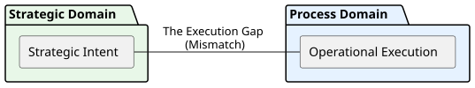
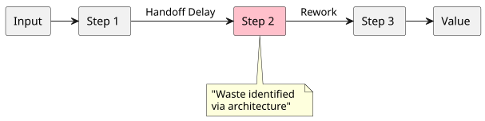
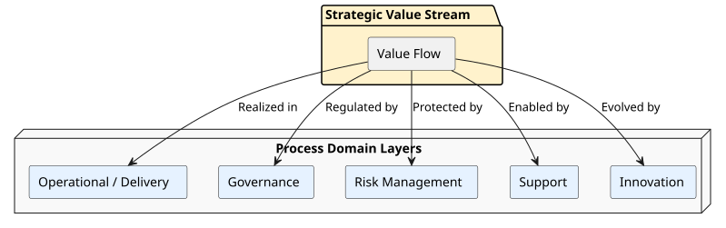
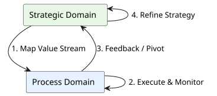

Value streams are often discussed as if they were mainly an operations concern: a way to describe work, reduce delays, or tidy up a process map. But in digital transformation, that is not enough. If a transformation is going to scale, value streams have to be treated as an architectural element—one that connects strategic intent to operational execution.
That matters because many organizations struggle with the same problem: strategy says one thing, while day-to-day work produces something else. Leaders define goals, teams launch initiatives, and processes continue to operate in ways that do not fully support the intended outcome. The result is familiar: good intentions, visible activity, but limited transformation. A fundamental principle of digital transformation is that architecture is what keeps intent connected to delivery.

In this context, architecture means more than diagrams or standards. It means shaping how work is organized so that execution can reliably produce the value the organization expects. Governance defines decision rights and guardrails. Execution is where the work gets done. And digital transformation only becomes sustainable when those two are aligned through the way value actually flows.
The starting point is straightforward: value streams must reflect the actual delivery of value to customers or to the business. They cannot be just a label attached to a set of activities. A value stream is only useful if it shows how strategic intent becomes real in the process domain.
That distinction is easy to miss. An organization may know what it wants—faster service, better customer experience, lower cost, higher reliability—but still fail to map those goals to the processes that create them. In that case, the organization has a statement of intent, not a system of delivery. Value streams serve as the essential bridge between those two worlds.
This is why value streams matter so much in transformation. They help answer a practical question: what is actually producing value, and where does that value flow? If the answer is unclear, then it becomes difficult to improve anything in a meaningful way. Efforts may reduce friction in one part of the organization while leaving the larger flow unchanged.
Value streams also keep a transformation grounded in customer needs and business objectives. That alignment is essential. If a process is efficient but does not support a real need, it may simply be well-organized waste. Efficiency matters, but it must be paired with effectiveness. It is critical to recognize that making a process faster is not the same as making it valuable.
A central theme of architectural design is visibility. Architectural practices can improve visibility and accountability in processes, and that is critical when an organization is trying to transform.
Visibility matters because work is often more complicated than it first appears. A process may look simple from the outside, but underneath it may include hidden handoffs, informal workarounds, duplicated effort, or steps that nobody has fully documented. If leaders cannot see the flow, they cannot govern it well. If teams cannot see the flow, they cannot improve it reliably.
This is where architectural thinking adds value. A value stream should not simply say, “This is the business objective.” It should map the route from intent to outcome. It should show what processes are involved, what supports them, what depends on them, and where accountability sits. In other words, architecture makes the flow legible.
There is also a useful distinction between a workflow and a value stream. A workflow says, “Here is the work.” A value stream says, “Here is how value is produced.” That may sound subtle, but it is an important shift in thinking. The first language describes activity. The second describes purpose.
For leaders, this distinction changes the conversation. Instead of asking only whether a process is running, they can ask whether it is contributing to the intended value flow. That is a better question for transformation, because it brings execution back into contact with strategy.
When value streams are not designed architecturally, drift tends to appear. Strategy and process begin to separate. Teams optimize what they can see, while the larger system becomes less coherent. Without this architectural focus, organizations can end up with highly efficient processes that are not effective at all.
That is where waste shows up. Waste may take the form of duplicate effort, unnecessary approvals, handoff delays, or rework caused by incomplete information. Sometimes waste is obvious. More often, it is built into the structure of the organization, which is why architectural design is so useful: it helps reveal where effort is being spent without creating value.

A related issue is the rise of shadow processes. These are the hidden or informal ways work actually gets done when the documented process does not fully match reality. Shadow processes often exist because people are trying to make the organization function despite gaps in the formal structure. But they create serious problems: limited visibility, inconsistent behavior, and weak accountability.
The core message is not that every process should be bureaucratic or rigid. It is that if work matters, it should be visible and understood. If a step exists, it should be mapped into the value stream. If it does not belong, it should be questioned. If it is missing, it should be created and governed. That is how an organization moves from tacit habits to manageable execution.
This also helps avoid another common trap: optimizing the visible process while ignoring the hidden layers that actually drive delay or cost. Without architectural clarity, a transformation team may improve one section of the flow and still leave the real bottleneck untouched.
Value streams must be placed within a larger process architecture. Operational delivery is where value is produced, but it does not stand alone. Governance provides decision rights and guardrails. Risk management embeds controls into the flow. Support processes—such as HR, IT, and procurement—enable delivery. Innovation processes help the organization evolve.
This broader view matters because value streams do not exist in isolation. If support work is orphaned, or if governance sits too far away from execution, the organization becomes harder to coordinate. If innovation is detached from the value stream, improvement becomes sporadic rather than systematic. Architecture helps keep these pieces connected.

Another important insight is that continuous improvement is vital for transformation sustainability. Alignment is not a one-time event. Strategy changes. Customer expectations change. Process performance changes. If the value stream is not revisited, drift returns.
That is why feedback loops are essential. As execution reveals gaps, those gaps should feed back into the value stream view. If the organization learns that a process cannot reliably deliver what was intended, the issue may not be just in execution. The intent itself may need refinement. This loop between strategy and process is what keeps transformation honest.

Mapping processes well also yields a practical benefit: they can often support more than one value stream. That creates reuse, which reduces burden and improves efficiency. Continuous improvement is therefore not only about fixing problems after they appear. It is also about designing for a more adaptable organization in the first place.
For transformation leaders, the lesson is clear: do not treat value streams as a reporting label or a workshop artifact. Treat them as a way to connect customer needs, business objectives, and process execution. If a value stream does not show actual value delivery, it is incomplete.
For architects and practitioners, the practical question is whether the organization can see its own flow. Can people identify where work begins, where it changes hands, where governance applies, and where value is actually created? If not, improvement efforts will stay partial.
A useful sign of progress is when the organization can discuss process changes in terms of value flow, not just activity counts or isolated steps. Another sign is when hidden work becomes visible enough to manage. A third is when improvement is no longer a one-off event, but part of how the organization learns.
In that sense, architectural design of value streams is not an abstract exercise. It is a discipline for making transformation executable. It helps leaders see where value is created, where it is lost, and where the organization needs to adapt.
Source Presentation: https://embracingdigital.org/en/lectures/dta-19
Series Blog Summary: https://embracingdigital.org/en/blog/dta-19